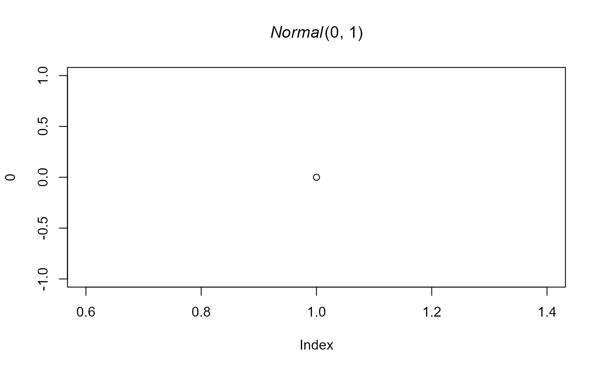

Prints a prior object
# S3 method for class 'prior'
print(
x,
short_name = FALSE,
parameter_names = FALSE,
plot = FALSE,
digits_estimates = 2,
silent = FALSE,
...
)a prior
whether prior distribution names should be shorted
whether parameter names should be printed
to return bquote formatted prior name for plotting.
number of decimals to be displayed for printed parameters.
to silently return the print message.
additional arguments
print.prior invisibly returns the print statement.
# create some prior distributions
p0 <- prior(distribution = "point", parameters = list(location = 0))
p1 <- prior(distribution = "normal", parameters = list(mean = 0, sd = 1))
# print them
p0
#> Spike(0)
p1
#> Normal(0, 1)
# use short names
print(p1, short_name = TRUE)
#> N(0, 1)
# print parameter names
print(p1, parameter_names = TRUE)
#> Normal(mean = 0, sd = 1)
# generate bquote plotting syntax
plot(0, main = print(p1, plot = TRUE))
